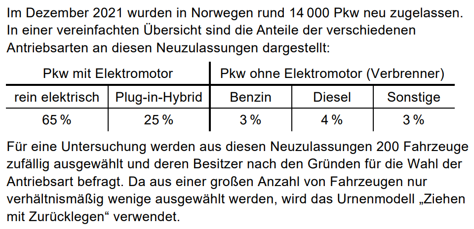

# Was macht diese Schleife?
# (1) Sie definiert die Variable i. Diese Variable nimmt alle Werte von 1 bis 10 an
# (sie "iteriert" über die Zahlen 1 bis 10).
# (2) Alles, was innerhalb der Schleife steht, kann auf i zugreifen.
# (3) Im Inneren der Schleife wird der jeweilige Wert von i in die Konsole ausgegeben.
for (i in 1:10) {
print(i)
}2.2 Schleifen und Funktionen
Wir werden zwei wichtige Konzepte behandeln - Funktionen und Schleifen. Mit Funktionen können wir einen Code in einen Block auslagern, ihn benennen und wiederbenutzen. Mit Schleifen können wir Code ausführen, bis eine bestimmte Bedingung erfüllt ist.
Schleifen
Aufgabe 1
Die Fibonaccifolge ist eine Folge, die mit den Zahlen \(1, 1, 2, 3, 5, 8, ...\) beginnt.
- Welche Vorschrift beschreibt diese Folge?
- Implementiere die Fibonaccifolge: Schreibe Code, der die ersten 20 Zahlen dieser Folge ausgibt.
Aufgabe 2
Illustriere an einem Beispiel, dass folgende Aussage für alle \(n \geq 1\) gilt:
\[ n^2 = \sum\limits_{k=1}^n [2k-1] \]
Es reicht, wenn du beispielsweise alle \(n \leq 50\) betrachtest.
Lückencode
# 2k-1 für 1 <= k <= 50 sind alle ungeraden Zahlen von 1 bis 100.
x <- seq(from = ..., to = ..., by = ...)
# Wir erstellen einen leeren Vektor y der Länge von x:
y <- rep(..., length = ...)
# Wir schreiben eine Schleife, die für jedes
# n <= 50 die Summe von k=1 bis n
# von 2k-1 berechnet und in y speichert.
for (i in 1:length(x)) {
y[i] <- sum(...)
}
# y besteht aus allen Quadratzahlen von 1 bis 50.
yFunktionen
Funktionen ermöglichen es uns, Code als einen Block zusammenzufassen und wiederzuverwenden. Das ist besonders wichtig, wenn wir immer die gleichen ausgewählten Rechenschritte auf unterschiedlichen Daten durchführen wollen. Gleichzeitig müssen wir den Code nur an einer Stelle umschreiben, wenn wir eine Änderung oder Korrektur vornehmen müssen.
Wir schauen uns im Folgenden eine Abwandlung dieser bayerischen Abituraufgabe an:

Es sei nun \(X = \begin{cases} 1 & \text{Pkw hat Elektromotor} \\ 0 & \text{Pkw hat keinen Elektromotor}\end{cases}\) für jedes Auto in der Ziehung. \(Y\) ist dann die Zahl der Pkw mit Elektromotor in der Ziehung, also die Summe der Ergebnisse der Ziehung.
Nehmen wir an, es werden von drei Umfrageinstituten jeweils vier dieser Untersuchungen durchgeführt. Die Ergebnisse dieser Umfragen sind in Rohform in der Datei funktionen-ziehungen.csv zu finden.
Aufgabe 3
-
Lade die Daten mithilfe der Funktion
read_csv()in einen Tibbleziehungen. -
Nutze folgenden Codeschnipsel, um aus den gegebenen Daten für \(X\ Y\) zu berechnen:
-
Warum sollte man den folgenden Code durch eine Funktion ersetzen?
statistiken <- tibble( Statistik = c("Mittel", "Median", "Standardabweichung"), "Institut 1" = c( mean(ergebnisse$`Institut 1`), median(ergebnisse$`Institut 1`), sd(ergebnisse$`Institut 1`) ), "Institut 2" = c( mean(ergebnisse$`Institut 2`), median(ergebnisse$`Institut 2`), sd(ergebnisse$`Institut 2`) ), "Institut 3" = c( mean(ergebnisse$`Institut 3`), median(ergebnisse$`Institut 3`), sd(ergebnisse$`Institut 3`) ) ) -
Nutze den folgenden Codeschnipsel, um eine Funktion zu schreiben, die für einen Vektor die Statistiken berechnet, und eine andere Funktion, die daraus den obigen Tibble erstellt:
Lösung
berechne_statistiken <- function(institut) { statistiken <- c(mean(institut), median(institut), sd(institut)) return(statistiken) } erstelle_stats_tibble <- function(ergebnisse) { tibble(Statistik = c("Mittel", "Median", "Standardabweichung"), values = ergebnisse %>% map(berechne_statistiken) %>% bind_rows()) %>% unnest(values) }